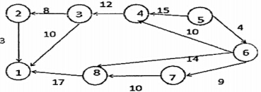
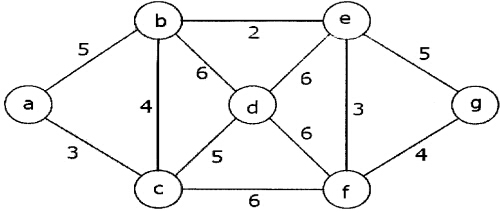
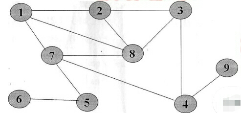
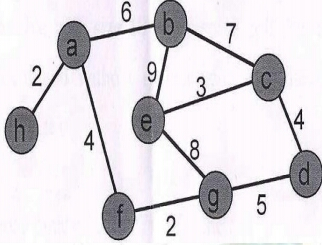
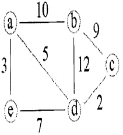
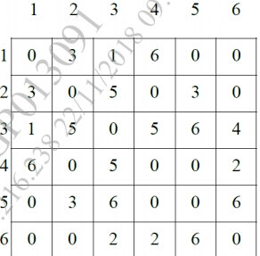
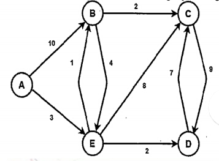
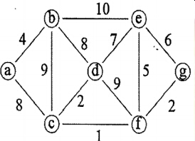
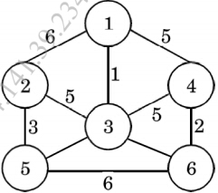
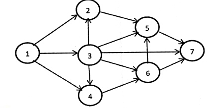

1. Define Basic Terminologies of Graph with example.
2.Explain the following terms of below given graphs:
i)In degree and out degree of each vertex.
ii)Adjacency list representation.

3. Draw any directed graph with minimum 6 nodes and represent graph using adjacency matrix, adjacency list, adjacency multilist and inverse adjacency list.
4. Consider the given graph and find the shortest path by using Dijkshtra’s Algo from a to g.

5. Define DFS and BFS for a graph. Show BFS and DFS for the following graph with starting vertex as 1.

6. Find the MST for the graph given using Kruskals Algorithm and show all the Step.
Example 1 :

Example 2 :

7. Consider the graph represented by the following adjacency matrix :
And find minimum spanning tree of this graph using Prim’s algorithm.

8.Find shortest path in following graph from node A, using Dijkstra Algorithm.

9. Construct MST from the given data using Prims Algorithms.
Example 1:

Example 2:

10. Explain topological ordering ? List their applications. Find the topological sorting of a given graph.
